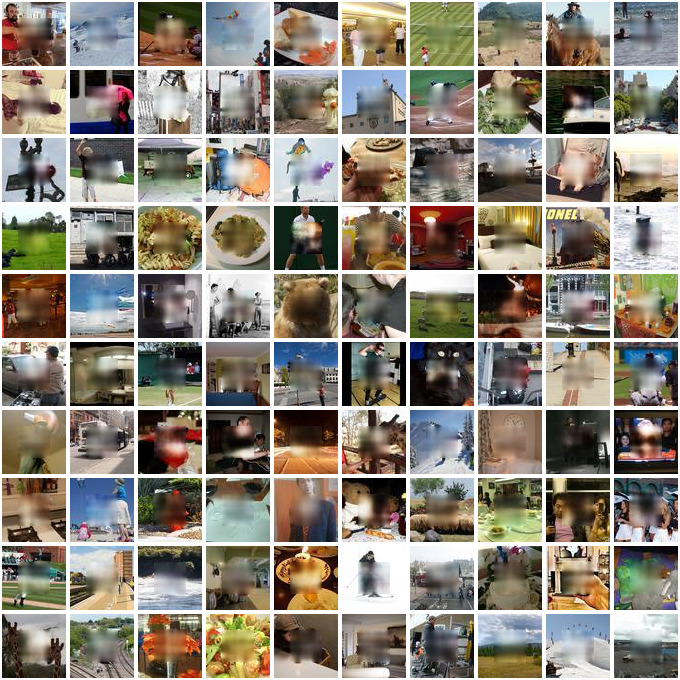
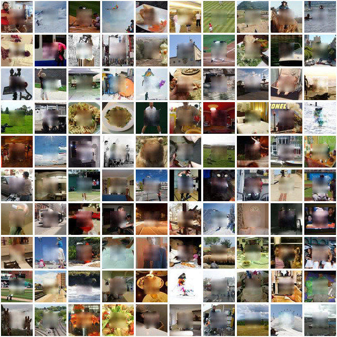
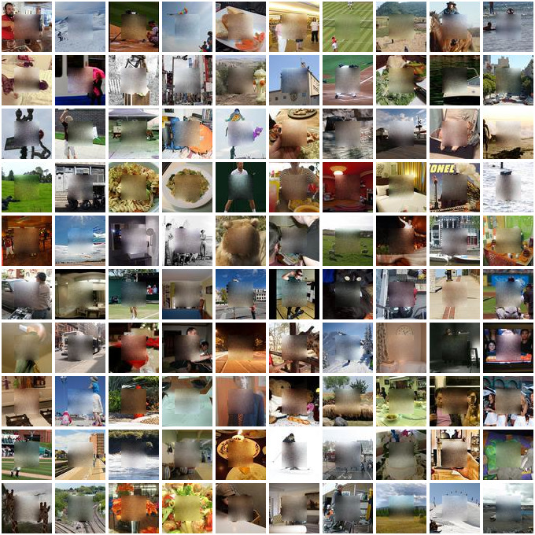

IFT6266 Final project: conditional image generation
Table of Contents
1 Introduction
This post is the final report for my implementation of the conditional image generation project 1, in which the task is to generate the 32x32 center of a 64x64 RGB image, given the border and a caption.
The post begins with a discussion of the models I considered for the task, followed by a presentation of the actual code implementation. Results are then discussed before concluding.
My previous blog posts for this projects can be found here, while the git repository containing the code can be browsed here.
2 Models
The obvious starting point in most deep learning project is the vanilla multi-layer perceptron. It consists of a stack of logistic regression layers, defined by an affine transformation that is non-linearly transformed:
\begin{equation} y = h(XW + b) \end{equation}where \(X\) is the design matrix containing one example per row and \(W\) and \(b\) are the parameters of the transformation. \(X\) can also be the output of an upstream layer.
Inside the network activation function \(h\) is usually the rectified linear unit \(max(0, X)\), but other activations can be used e.g. linear activation (i.e. no activation), sigmoid or tanh.
If we want to reduce the number of parameters and introduce spatial invariance in the model, the matrix multiplication can be replaced by a convolution operation.
Such network are usually trained by stochastic gradient descent. I have also considered the ADAM algorithm in which corrections for the first and second moment of the gradients are applied to the step size and the "generative adversarial network" framework for training the generating network, in which there are two networks: the generator and the discriminator. The generator loss is defined by its ability to fool the discriminator, who attempts to tell if a given sample comes from the data distribution.
3 Code
The code discussed in this section can be browsed here, and corresponds to the "final" tag. Myself being a Keras user, I've decided to write everything in straight theano in order to learn a bit more about implementation details. This ended-up being much more work than I initialy had foreseen (the network.py file has over 1k SLOC), but I did learn a lot about the lower-level details and it made me appreciate how worthwile are the higher-level APIs provided by libraries like keras.
This section starts with a presentation of the layer API and the different implementations. The network class, which wraps a collection of layers and provides the training logic is then described along with a specific function for generative adversarial training. I then discuss some small toy problems used to validate the implementation.
3.1 Layers
3.1.1 API
The interface that a layer must implement is defined by 7 methods:
-
Layer.expression(self, X) - The symbolic theano expression defining the layer
-
Layer.training_expression(self, X) - In some cases, the expression is not the same at training and test time (e.g. dropout)
-
Layer.parameters(self) - The list of trainable parameters
-
Layer.reg_loss(self) - Auxilliary term to add to the global loss. This is used to implement weight norm penalties.
-
Layer.updates(self) - List of
(variable, update)tuples defining auxilliary update operations besides the gradient descent. Used, e.g. to compute the online mean in BatchNorm layers. -
Layer.save(self, h5grp) - Function used to save the layer configuration and parameters.
-
Layer.load(h5grp) - Static method used to load a saved layer.
With this API, several layers were defined:
-
Generator - Created at the last minute to ease the task of writting the conditional GAN. Its expression takes as input a 64x64 image and outputs this image and a length-100 latent vector that is mapped by an affine transformation to a 4th channel.
-
LSTM - long-short-term-memory recurrent layer. It is actually
super slow and I didn't have enough time to debug this so
I unfortunatly could not use it. It definitely made me
realize the huge amout of paramters these networks have
though! And, it provided an excuse to finally learn how to use
theano.scan. -
Recurrent - A simple recurrent layer. Much simpler than the LSTM but much less powerfull.
-
Convolution - The standard convolutional layer. The border mode and strides can be specified and there is also an option of including L2 loss on the kernel.
-
MaxPool - Pooling by maximum value. Used to reduce the dimensions of the convolved feature maps.
-
Dropout - The dropout regularization layer. At training time, a binary variable is sampled for each input from a Bernouilli distribution and is multiplied to the corresponding input. At test time, the input is scaled by the inclusion probability (equivalent to multiply the weights of a downstream affine transformation layer)
-
ScaleOffset - scale and offset the input by fixed constants.
-
Clip - Constrain the input to be within a fixed range.
-
LinearTransformation - This is actually the affine transformation but I never bothered setting the name right!
-
ReLU - The rectified linear unit activation. It takes an optional
alphaparameter defining the slope of the negative part. If this parameter is set at a different value than its default of zero, it yields the leaky ReLU. -
Tanh - hyperbolic tangent activation
-
Sigmoid - Sigmoid activation
-
Softmax - Softmax activation
-
BatchNorm - The batch normalization layer, with a special setup if using to normalized convolved feature maps.
3.2 Network class
The network class is a sequential collection of layers defining a
model. The most interesting bits are probably the __cache_generator
function, which allows a number of mini-batches of data to be cached
in shared variables to eliminate the memory bottleneck, especially
when running on the GPU, and (especially) the
__make_training_function method, which actually implements SGD with momentum
and the ADAM algorithm.
3.3 GAN training
There is a function, train_GAN, which take as input two compiled
Network objects and train them with the GAN framework. The data and
the latent code is passed by defining python generators from which the
function sample batches.
3.4 Validation
Since I was starting from scratch, I needed a couple of simple toy problems to validate my layers.
All of the dense layers were tested on the simple problem of fitting a
noisy sine function, with satisfactory results:

The convolutional layers were tested with an implementation of LeNet5 on the MNIST dataset:

Figure 1: Accuracy vs training epochs
The recurrent layers were tested on a classification task between two 2D gaussian clusters, where the inputs are a variable number of sampling from a given cluster.
The GAN training function was tested on a generation task where the targeted distribution is a simple 2D normal distribution.
4 Results
I will now describe the results I've got. Before I jump into this though, a few words about what didn't work.
As said earlier, my LSTM implementation has a speed bottleneck somewhere and I did not have time to debug it, rendering it unusable to produce embeddings from the caption. I've also found that the simple recurrent layer was not really powerfull (given the limited hyperparameter tuning that I did), so unfortunatly I did not suceed in incorporating the captions in a working model.
After I had established a working baseline with a dense MLP, I tried to optimized some convolutional models, but could not get them to output anything other than a grey patch. Looking at the blogs, though, it looked like students fiddling with conv -> deconv architectures were getting similar results to my baseline, and so I did not spend more time with these models.
What did seem to work, though, were generative adversarial networks. I first started just plugging my dense MLPs into this framework but that did not work very well, even following the GANHacks 2 recommendations. In the end, I ended up going down the obvious path of implementing the DCGAN model 3. My implementation can be found in goodmodels/model13.py in the code repository. Instead of passing only the border to the generator, I also pass the center patch generated from my baseline model. The latent code used is a length-100 vector drawn from a uniformed distribution projected and reshaped into an additional channel. The big problem at this step was that there wasn't a significant amount of time left and so the training essentially had to work on the first try. After spending some time carefully checking that everything ran fine (but super slowly!) on the CPU, I optimistically submited some jobs on the Hades GPU cluster. As per Murphy's law, the code crashed and no jobs suceeded. I could not get it to reproduce on the CPU and didn't succeed on debugging the GPU-related problem, and since the CPU training was much too slow, I unfortunately don't have results for the DCGAN :(
4.1 Metrics
The gold standard is manual inspection of the generated images, however I also looked into alternative metrics to quantify the quality of the generated image, which as we all know is an interesting problem in itself. We can see an image as a collection of pixels, which themselves can be viewed as instances of 256 different classes. In this view, it is possible to measure a probability distribution over pixel values for a given image. It is then possible to measure the Kullback-Liebler divergence (KL) between this distribution and another one. KL measures (in a sense) how much 2 probability distribution differs. We can choose to compare the distribution from the generated image with the true image, or the distribution from the border. As training progresses, this divergence goes down:

Figure 2: The K-L divergence between the border and center for one image, as training progresses.
This measure jumps around also, which suggest that smoothing might be necessary, but it actually seems to be a good indication of the fit quality. Surprisingly this works as well when comparing with the true center patch or with the border! Of course, minimizing this divergence only ensures that the pixels are sampled from the right distribution but it cannot quantify the structure in the images.
4.2 Generated images
I have three similar models which have what I deem to be acceptable results. The patches are quite blurry, but they contain the right structure (at least partially). The models are different configuration of a 3 hidden layer MLP with 1k hidden units per layer, with batchnorm at each layer and a sigmoid activation at the last layer. For the code, see goodmodels/model0{1,3,4}.py.
The first network is trained using SGD with momentum on a mean square error loss, using a very small learning rate (1e-7).

The second network is like the first one but using the ADAM algorithm with the default parameters.

The third one is like the second one, but the loss is a sum of the pixel-wise binary crossentropy. This effectively views each output as the probability that the given pixel in the given channel is fully activated.

These are relatively simple models, and so I'm pleasantly surprised that they work so well :)
5 Conclusion
While I'm a bit disappointed that I did not succeed in using the
captions and that I could not produce DCGAN results do to a
GPU-specific problem, I'm quite happy with what I've accomplished with
this project. After all, I do have models which perform relatively
well, and I must say I've learned a lot from having to implement every
functionality in straight theano! At the same time, this makes me
appreciate the T.grad function of theano, without which this would
have been very difficult, and it also made me realize how easy the
higher level APIs (e.g. Keras) make it to use deep learning.
Overall, this was a fun project and a good learning experience :)